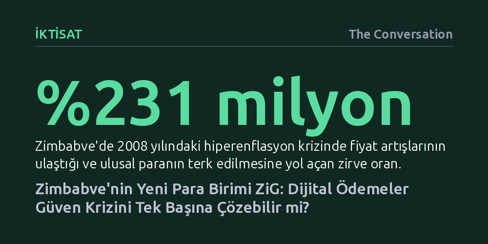

IKTISAT · The Conversation · 2026-10-26
Zimbabve Merkez Bankası, yeni para birimi ZiG'in benimsenmesi için Hindistan destekli dijital ödeme altyapısına yönelse de teknoloji tek başına kurumsal güveni sağlayamaz. ZiG'in kalıcı olması; zorlamaya değil gönüllü tercihe, şeffaf mali disipline ve yeterli döviz rezervine bağlı.
Gelişmiş dijital ödeme teknolojilerinin veya finansal altyapıların, para basımı ve enflasyonla sarsılmış kurumsal güveni ve makroekonomik istikrarı tek başına ikame edemeyeceğini gösterir.

Zimbabve Merkez Bankası, Nisan 2024'te tedavüle soktuğu altın destekli yeni para birimi ZiG'in benimsenmesini hızlandırmak için rotayı dijital altyapıya kırdı. Banka, Hindistan'ın yaygın anlık ödeme sisteminin mimarı olan NPCI International ile lisans görüşmeleri yürütüyor. Amaç; kartlara ihtiyaç duymadan doğrudan hesaplar arası küçük tutarlı transferleri mümkün kılmak, işlem maliyetlerini düşürmek ve bankalar ile mobil para operatörleri arasındaki geçişleri hızlandırmak. Hükümet ayrıca 2026 bütçesinde ZiG üzerinden yapılan elektronik transfer vergisini %2'den %1,5'e düşürerek yerel parayı daha cazip kılmaya çalıştı.
Ne var ki dijital ödemeleri kolaylaştırmak ve ucuzlatmak, halkın bir para birimini cüzdanında tutmak istemesini otomatik olarak sağlamıyor. Teknolojik altyapı, zaten güvenilen bir paranın dolaşımını pratikleştirebilir; fakat tek başına kurumsal güven ve istikrar yaratamaz. ZiG'in kaderini, ödeme hızından ziyade Zimbabve kurumlarının geçmişteki hataları tekrarlayıp tekrarlamayacağı belirleyecek.
Zimbabve halkının ulusal paralara mesafeli durmasının arkasında onlarca yıla yayılan ağır bir ekonomik yıkım yatıyor. Kamu harcamalarının karşılıksız para basılarak finanse edilmesi, 2008 yılında enflasyonun %231 milyona ulaşmasıyla sonuçlanmış ve eski Zimbabve doları tedavülden kaldırılmıştı. Sonrasında 2016'da dolara eşit iddiasıyla çıkarılan tahvil senetleri ve 2019'da zorunlu olarak dönüştürülen banka bakiyeleri de yüksek enflasyon karşısında eriyip gitti. Halk ve işletmeler için birikimlerini ABD dolarında tutmak, hayatta kalmanın ve serveti korumanın tek rasyonel yolu haline geldi.
ZiG de bu güvensizlik ortamında oldukça sancılı bir başlangıç yaptı. Tedavüle girdikten yalnızca birkaç ay sonra, 27 Eylül 2024'te Merkez Bankası kuru ABD doları karşısında %43 oranında devalüe etmek zorunda kaldı. Hükümetin ZiG kabul etmeyen esnafa cezalar kesmesi veya bazı vergileri ZiG ile ödeme zorunluluğu getirmesi tabanda gönüllü bir kabul yaratmadı. Halk, bütçe açıkları büyüdüğünde hükümetin yeniden karşılıksız ZiG basarak parayı değersizleştireceğinden endişe duyuyor.
Son dönemde enflasyonun tek hanelerde seyretmesi umut verici bir işaret olsa da kalıcı güven için henüz yeterli değil. Eylül 2026 itibarıyla ülkenin resmi döviz rezervi yaklaşık 2 milyar dolar seviyesinde ve bu tutar yalnızca iki aylık ithalatı karşılayabiliyor; oysa Merkez Bankası'nın asgari hedefi üç ila altı aylık rezerve ulaşmaktı. Banka mevduatlarının ezici çoğunluğu halen ABD doları cinsinden tutulmaya devam ediyor.
Küresel tecrübeler, dijital altyapı ile para politikası dengesinin nasıl kurulabileceğine dair önemli ipuçları sunuyor. Kamboçya'nın 2020'de Japon ortaklığıyla hayata geçirdiği 'Bakong' ödeme sistemi, halkı zorlamadan yerel parayı teşvik etmenin başarılı bir modelini oluşturdu. Dolar kullanımını yasaklamak yerine Bakong üzerinde hem dolar hem yerel para birimi (riel) işlemlerine izin verildi; yerel parayla yapılan transferler kolaylaştırılıp ucuzlatılınca, riel kullanım payı 2024 yılı itibarıyla %49 seviyesine tırmandı.
Namibya ise Hindistan'ın anlık ödeme teknolojisini Afrika'da devreye alan öncü örneklerden biri olarak öne çıkıyor. 'Instant Payment Namibia' platformu üzerinden ilk etapta sosyal yardım gibi kamu ödemeleriyle kademeli bir yayılma stratejisi izleniyor. Her iki örnek de aynı gerçeğe işaret ediyor: Ödeme sistemleri insanlara seçenek sunduğunda ve yerel parayı daha avantajlı kıldığında sonuç veriyor.
Öte yandan, dışarıdan ödeme teknolojisi ithal etmenin jeopolitik riskleri de göz ardı edilmemeli. Günümüzde enerji hatları, kritik madenler ve tedarik zincirleri gibi finansal takas sistemleri de ülkeler arası siyasi gerilimlerde birer silaha dönüştürülebiliyor. Zimbabve, Hindistan teknolojisini lisanslarken sistemin nihai kontrolünü, veri egemenliğini ve operasyonel yönetimini kendi kurumlarında tutmak zorunda.
Zimbabve Merkez Bankası'nın döviz hesaplarını zorla ZiG'e dönüştürmeyeceğini açıklaması ve tek para birimine geçişi takvim yerine makroekonomik şartlara bağlaması doğru yönde atılmış adımlardır. Ancak dijital ödeme sisteminin ZiG'e kalıcı bir zemin sağlayabilmesi için üç temel gereksinim bulunuyor.
İlk olarak, kurulacak dijital ödeme platformu tüm ticari bankalara, mobil ağ operatörlerine ve fintech girişimlerine adil, şeffaf ve eşit koşullarda açık olmalıdır. Hiçbir sağlayıcının rakipleri dışlamasına ya da fahiş komisyonlar uygulamasına izin verilmemelidir. İkinci olarak, vatandaşlar dolar ile ZiG arasında serbestçe seçim yapabilmeli; ZiG'i cezalandırılma korkusuyla değil, günlük hayatta daha pratik ve ucuz olduğu için tercih etmelidir.
Son olarak Merkez Bankası, dijital ödemelere ilişkin verileri düzenli ve şeffaf biçimde yayımlamalı, para arzını sıkı denetim altında tutarak mali disiplinden taviz vermemelidir. Ancak bu şartlar sağlandığında dijital teknoloji ZiG'in kurtarıcısı değil, ekonomik güvenin pekiştiricisi olabilir.